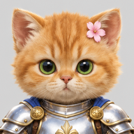

PUMP FIGHTERS
for PSP and PPSSPP
Make the PUMP FIGHTERS SF33RD.AFS from your own copy of Street Fighter III 3rd Strike. Your file is checked and patched in this browser; nothing is uploaded.
-
Pick your SF33RD.AFS
PS2 US version (v1.0), the file in the disc's THIRD folder (642,492,416 bytes).
-
Save the modded file
DOWNLOAD SF33RD.AFS -
Put it on your PSP or in PPSSPP
PUMP FIGHTERS runs on the 3s-psp port. Get its
EBOOT.PBPfrom the 3s-psp project's own release (we can't share it), then lay the folder out like this:PSP/GAME/3rd-strike/ EBOOT.PBP resources/ SF33RD.AFS ← the modded fileIn PPSSPP the PSP folder is in its memory stick folder (on Windows usually
Documents/PPSSPP/PSP). Keep your original SF33RD.AFS somewhere else.